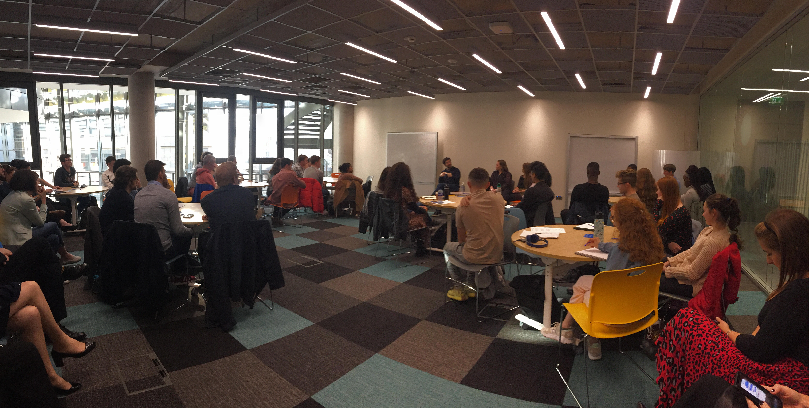

Hosting Jeff Weiner
At Trinity College

At Trinity College
On October 16th 2019, I had the opportunity to host Jeff Weiner, at the time, the CEO of LinkedIn at Tangent in Trinity College Dublin. It was a surreal experience to host an incredibly successul and influential man. The talk revolved around Closing the Network Gap. Talent is equally spread between us, but opportunities aren't. During the time we had together we discussed how we don't have equal opportunities and how LinkedIn is trying to challenge this and even out this curve.
The Plus One Pledge is widely known in the LinkedIn Community. Through this you pledge to share you time, contacts or talent with people outside of your network, people who may not have the same resources and opportunities as you do. This evens out the playing field and spreads opportunities.